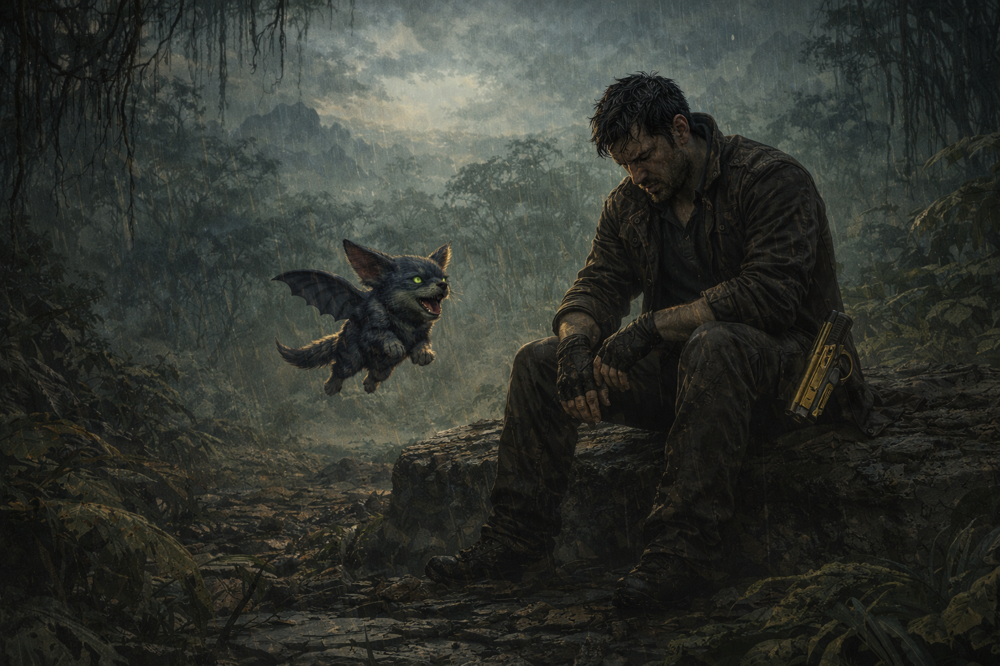

Tony siguió corriendo dejando el lago atrás. Dejando a SITA atrás. Algo en su pecho se apretó con culpa pero sus piernas no se detuvieron. KAWA volaba a su lado lanzándole miradas de desaprobación que él ignoraba deliberadamente.
El planeta se extendía interminable y verde a su alrededor. Encontró una roca plana y se sentó exhausto mientras la lluvia fina y tibia comenzaba a caer. No tenía nave, no tenía destino, no tenía a Elvira. Solo tenía a KAWA, la Golden Gun en su funda y el peso de todas las decisiones que lo habían traído hasta aquí.
Detenerte y enfrentar lo que sientes